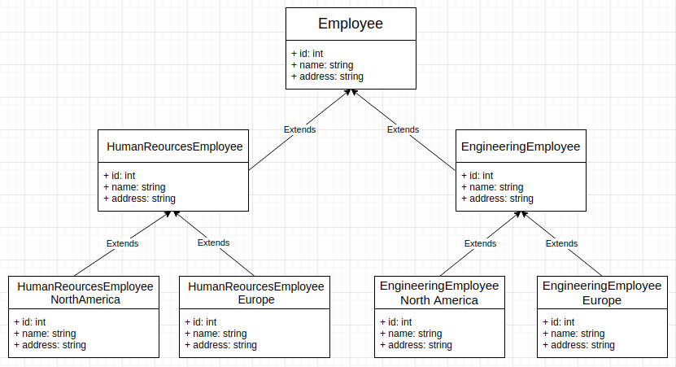
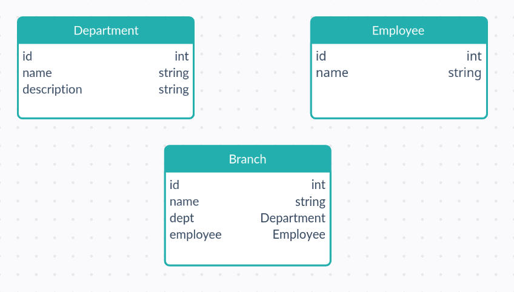
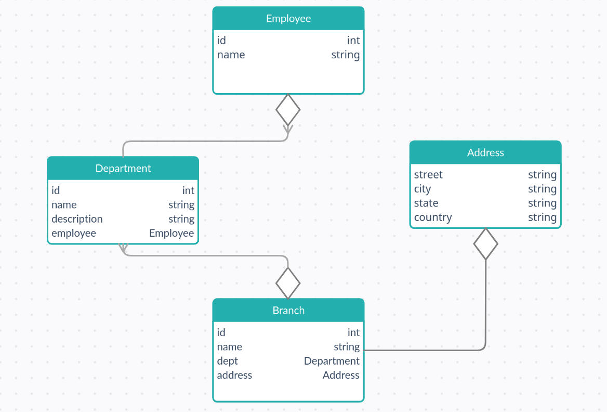
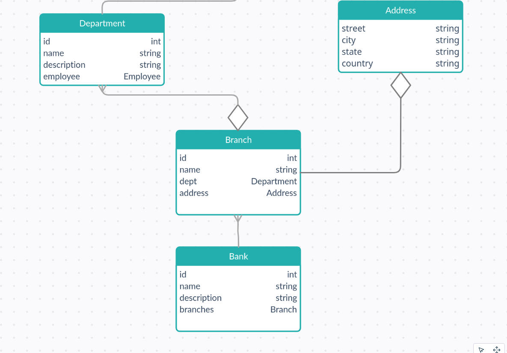

8 minutes
Reuse
While designing a class, always keep the Open-Closed Principle in mind. It states that,
software entities (classes, modules, functions, etc.) should be open for extension, but closed for modification.
This implies that an entity shall allow extensions to itself, but no modification to its source code. We are therefore allowed to extend our base class, and consequently implement re-usability.
Class Inheritance
Inheritance models an Is-A relationship, where the child class inherits properties from the parent class, making the child class a specialized version of the parent class.
New functionality is achieved by constructing a child class (child class) that extends the functionality of the parent class. This is achieved through class inheritance, which implies that all the original attributes and methods will be inherited by the new child class. This reuse technique is therefore called White-Box Reuse since all internal details of the parent class are visible to the child class.
Inheritance reused needs to be implemented carefully, otherwise we can run into Class Explosion (a design anti-pattern) where the number of classes grows exponentially to the point where it becomes unmanageable. For example, for every employee type, the original class is extended such as one for freelancing payroll and one for salaried. This will get extended to multiple departments in different branches at different locations, leading to an exponentially large number of classes.

Inheritance reuse implementation for employees leads to class explosion.
Class inheritance is statically defined, and makes it easy to modify functionality through redefinition of the attributes and methods of classes, or overriding methods in sub-classes. However, this implies that implementations cannot be modified at run-time.
If the parent class has some data attributes well defined, and doesn’t extend much functionality, the implementation of the child class becomes tightly bound with its parent class, so much so that any change in the parent class’ implementation would change the child class too. If such an implementation dependency arises, the parent class should be rewritten since this dependency causes a loss in flexibility and subsequently, re-usability.
Encapsulation ensures that all the methods and their respective data are bundled together. However, the ability of a child class to manipulate the parent class’ data directly through protected access modifier has lead OOP purists to believe that,
inheritance breaks encapsulation.
Since derived classes can be given the ability to manipulate base class’ data, this further leads us to the Fragile Base Class Problem, where the base classes (parent classes) is deemed “fragile” because modifications of the base class that seem safe may cause derived classes (child classes) to malfunction.
It is therefore said that the programmer cannot deem a modification to be safe solely by examining the definitions of the base class. If a derived class is allowed to access members inherited from a base class, changes in the base class may require maintenance of the derived class as well.
A good practice is to inherit from abstract classes only, since they provide little or no implementation.
Association
Association is the relationship established between classes through their objects. Complex types can be constructed through a combination of different objects.
For example, an employee of a bank can be working in any of it’s departments. A Branch’s information tells us which Department the Employee is “associated” with.

An Employee (object) is associated with a Department (object) in a Branch (object).
Aggregation
Restricted form of Association.
Aggregation models a Has-A relationship, where a cluster of objects are to be treated as a single unit. The relationship is unidirectional as one object is responsible for others, and a vice-versa relationship is not possible. However, objects on both the sides of the relationship can exist individually and one object’s lifetime has no bearing on the other objects in the relationship. Therefore, Aggregation is said to be a weak type of Association.
For example, a department would be a container for all the various branches it exists in, while maintaining all the employees that work in the said department.

Description of the relationship between different aspects of a bank’s branch.
If a department is said to close, a branch housing more than one department would still be functional and will continue to exist. Moreover, since the employees are ultimately employed by the bank (only “associated” to a department), they may still be retained and transferred to other departments.
Thus, all objects under the parent container would still exist even if the parent container’s life cycle ends.
Acquaintance
Acquaintance models a Using relationship, where objects are aware of other objects and therefore may request operations over each other. Also known as Association. However, objects are not responsible for each other.
Object Composition
Restricted form of Aggregation.
Composition models a Part-Of relationship. For example, a class composite can contain an object of another class component implying that a composite “has a” component. Object composition is dynamically defined at run-time through objects acquiring references to other objects, and therefore their interfaces shall be well defined to facilitate the intercommunication between objects. This reuse technique is therefore called Black-Box Reuse since no internal details of the parent object are visible to the child object.
Composition enables the reuse of the implementation of components through composite classes without any inheritance. Continuing with the previous example, the branch class is a class composite with an interface for the department and the address. These two attributes have a separate class of their own, making them class components. Their objects are initialized and then composed with a branch object.

New functionality is achieved by making one object responsible for managing another object’s life-cycle. This directly implies the destruction of all child objects of a parent object when it is itself destroyed. If the bank itself is said to close, then all departments would cease to exist, and so would all the branches. Moreover, the employees too would be terminated. Therefore, Composition is said to be a strong type of Association.
Now, object composition re-usability doesn’t break encapsulation since objects are only accessible through interfaces, and are replaceable among the same type. Moreover, since an object’s implementation is defined in terms of it’s interfaces, implementation dependencies are minimum.
Favor object composition over class inheritance.
This ideology allows us to keep each class encapsulated for one task, reducing the risks for a class to grow exponentially to extend functionality, and the system’s behavior would depend on the objects’ interrelationships.
Ideally, composition of existing components should provide all the desired functionality, but it is seldom the case. Inheritance, on the other hand, makes it easy to make new components based on old ones. Thus, both reuse methods have their appropriate uses and should be used as and when required.
Delegation Pattern
Delegation Pattern models a Is-A-Role-Played-By relationship, where two objects service a request together - one receives the request and forwards it to the other for processing. This implies that an object of the secondary class which contains the logic for completing a task, is used as a class member for the primary class that receives the request.
For example,
class First {
public:
void print() { cout << "The Delegate"; }
};
class Second {
First ob;
public:
void print() { ob.print(); }
};
int main() {
Second ob1;
ob1.print();
return 0;
}
This is behavior is somewhat analogous to inheritance, except the new class has an instance of the original class making the pattern more generalized and structurally different from inheritance. This also provides more run-time flexibility since the delegate can be changed easily during execution, like in the example, changing print method of class First would change what is displayed on the console.
While composition is much more efficient for reuse than inheritance, it isn’t as powerful since a composition of existing components cannot always provide the desired functionality.
Parameterized Types
Parameterized types allows you to change the types being used by a class. The language implementation will create a customized version of the List class template for each type of element. For example in C, an array can be of type integer, char or long.
Templates in C++
Templates ensures compatibility of a code module with different data types through a Template Signature, that is, passing a data type as a parameter to the code.
Templates behave like macros. They are expanded at compile-time where the compiler performs type checking and matching before appropriately replacing the code at the call point.

Template expansion at compile-time.
Structures
Run Time
The focus is mainly on the instances of objects since the structure of the program at run-time bears little to no resemblance to the actual code structure. This is because only certain fields of the structure store data during run-time, which is discarded as soon as the program is destroyed. Moreover, it keeps involving as the data changes and the object communicates with other objects. Therefore, only the actual implementation is important in such a case.
The behavior composition of objects can be changed at run-time in the case of Object Composition, but not in Inheritance and Parameterized Types.
Compile Time
The focus is mainly on the code structure (interfaces and classes) since at compilation, the definitions and their relationships (such as inheritance) are preserved. Such relationships therefore shall be defined with utmost care since it will affect the run-time structure as well.
Inheritance provides default implementations for operations while keeping provision for override through subclasses, and Parameterized Types allows change of types being used by a class.